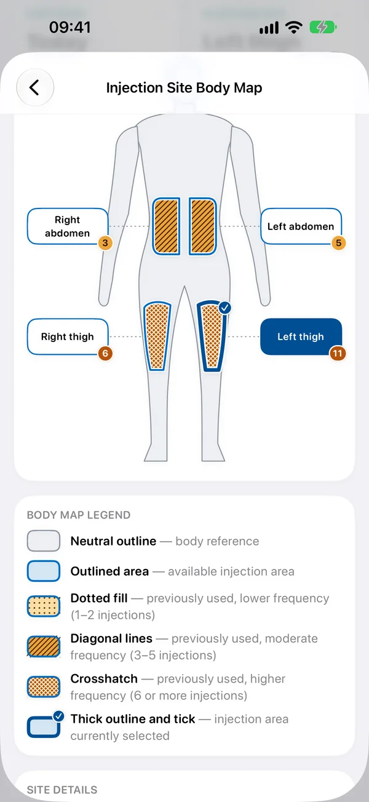

Ozempic injection sites and dose steps: what the manufacturer says
This page lists where the manufacturer says Ozempic (semaglutide) can be injected in the UK, the EU and the US, and its dose steps and missed-dose wording, in their own words, with the documents each comes from. It is not medical advice.
Talk to a healthcare professional. The injection areas shown come from the manufacturer's product information, and the shading shows where you've injected before. GLPMGR is not a medical device and this is not medical advice: it can't tell you where it is safe for you to inject. Talk to your doctor, pharmacist or nurse about where and how to inject, follow the instructions from your prescriber and the leaflet supplied with your medicine, and ask a healthcare professional if you are unsure, or if you have pain, lumps, bruising or any other problem at an injection site.
Where Ozempic can be injected
Manufacturer: Novo Nordisk
United Kingdom
Areas listed:
- Front of waist (abdomen)
- Front of thigh
- Upper arm
Rotation: the document gives no rotation wording, so none is shown.
Source: MHRA products database / Novo Nordisk: Ozempic solution for injection in pre-filled pen, package leaflet (PLGB 04668/0333, last revised 11/2025), revised 11/2025. Checked 20 September 2026.
European Union
Areas listed:
- Front of waist (abdomen) — keep at least 5 cm from your belly button
- Front of thigh
- Back of upper arm — another person should inject here
Rotation, in the manufacturer’s words: “Avoid using the exact same spot as the last time you injected.”
Source: EMA: Ozempic EPAR Product Information, revised EMA last updated 25/08/2026. Checked 20 September 2026.
Also consulted:
- EMA: Ozempic: EPAR (European Public Assessment Report) page, listing the current product information and its last-updated date — Used to confirm the current English product information.
United States
Areas listed:
- Stomach (abdomen)
- Thigh
- Back of upper arm — another person should inject here
Rotation, in the manufacturer’s words: “Change (rotate) your injection site with each injection. Avoid using the exact same spot as the last time between injections.”
Source: FDA / DailyMed: Ozempic prescribing information and patient instructions (DailyMed, current label), revised v20 (2026-06-01). Checked 20 September 2026.
Ozempic dose steps and missed doses
Most GLP-1 medicines start low and step up, which doctors call titration. This is what the Ozempic product information says, quoted word for word. UK wording comes from the patient leaflet; US wording from the prescribing information and Medication Guide. Your prescriber’s instructions come first, and GLPMGR never works out or recommends a dose.
United Kingdom
Dose steps, in the product information’s words:
- “The starting dose is 0.25 mg once a week for four weeks. After four weeks your doctor will increase your dose to 0.5 mg once a week.”
- “Your doctor may increase your dose to 1 mg once a week if your blood sugar is not controlled well enough with a dose of 0.5 mg once a week.”
- “Your doctor may increase your dose to 2 mg once a week if your blood sugar is not controlled well enough with a dose of 1 mg once a week.”
- “Do not change your dose unless your doctor has told you to.”
If a dose is missed:
- “If you forgot to inject a dose and: it is 5 days or less since you should have used Ozempic®, use it as soon as you remember. Then inject your next dose as usual on your scheduled day.”
- “If you forgot to inject a dose and: it is more than 5 days since you should have used Ozempic®, skip the missed dose. Then inject your next dose as usual on your scheduled day.”
- “Do not use a double dose to make up for a forgotten dose.”
Source: MHRA / Novo Nordisk: Ozempic pre-filled pen package leaflet (PLGB 04668/0333), revised 11/2025. Checked 1 October 2026.
United States
Dose steps, in the product information’s words:
- “Initiate OZEMPIC with a dosage of 0.25 mg injected subcutaneously once weekly for 4 weeks.”
- “After 4 weeks on the 0.25 mg dosage, increase the dosage to 0.5 mg once weekly.”
- “If additional glycemic control is needed after at least 4 weeks on the: 0.5 mg dosage, the dosage may be increased to 1 mg once weekly. 1 mg dosage, the dosage may be increased to 2 mg once weekly.”
- “The maximum recommended dosage is 2 mg once weekly.”
If a dose is missed:
- “If you miss a dose of OZEMPIC, take the missed dose as soon as possible within 5 days after the missed dose. If more than 5 days have passed, skip the missed dose and take your next dose on the regularly scheduled day.”
Source: FDA / Novo Nordisk: Ozempic prescribing information and Medication Guide, DailyMed, effective 06/2026. Checked 27 September 2026.
In GLPMGR, enter the dose steps your prescriber gave you and it fills in the right dose each time you log. The same wording is in the app, under Dose Steps & Missed Doses.
Track your Ozempic doses and injection sites in GLPMGR
GLPMGR is a private GLP-1 tracker for iPhone, iPad and Apple Watch. Choose Ozempic when you record a dose and it offers only the areas above for your region, shows a body map of where you have injected before, and shows the manufacturer’s rotation wording. It also follows your dose steps, reminds you when a dose is due, and keeps a note of side effects. It does not tell you where to inject, and it is independent of Novo Nordisk.

Other medicines with the same active ingredient:
Medical disclaimer
Talk to a healthcare professional. The injection areas shown come from the manufacturer's product information, and the shading shows where you've injected before. GLPMGR is not a medical device and this is not medical advice: it can't tell you where it is safe for you to inject. Talk to your doctor, pharmacist or nurse about where and how to inject, follow the instructions from your prescriber and the leaflet supplied with your medicine, and ask a healthcare professional if you are unsure, or if you have pain, lumps, bruising or any other problem at an injection site.